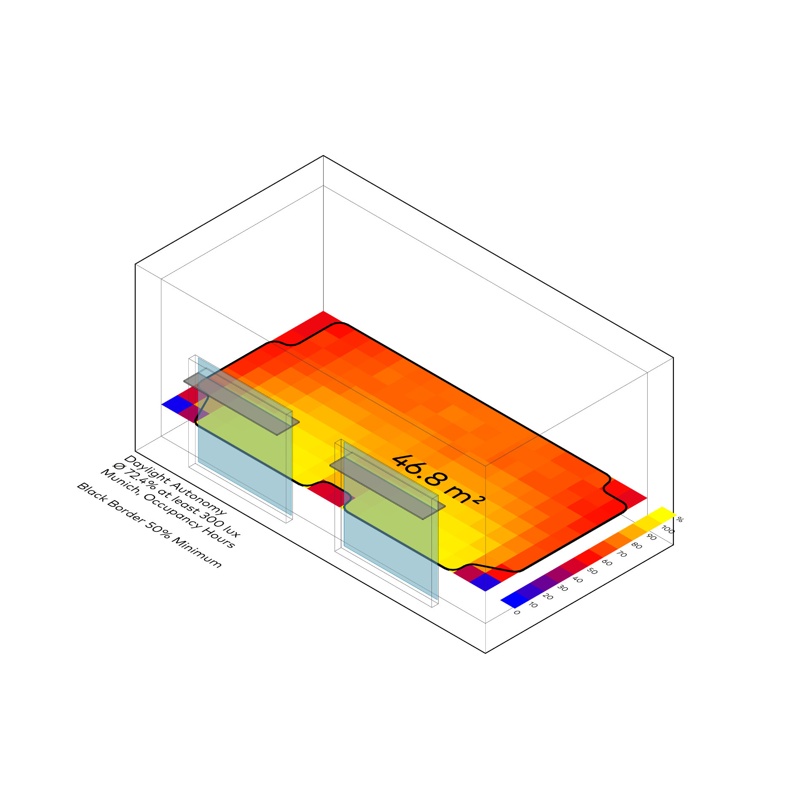
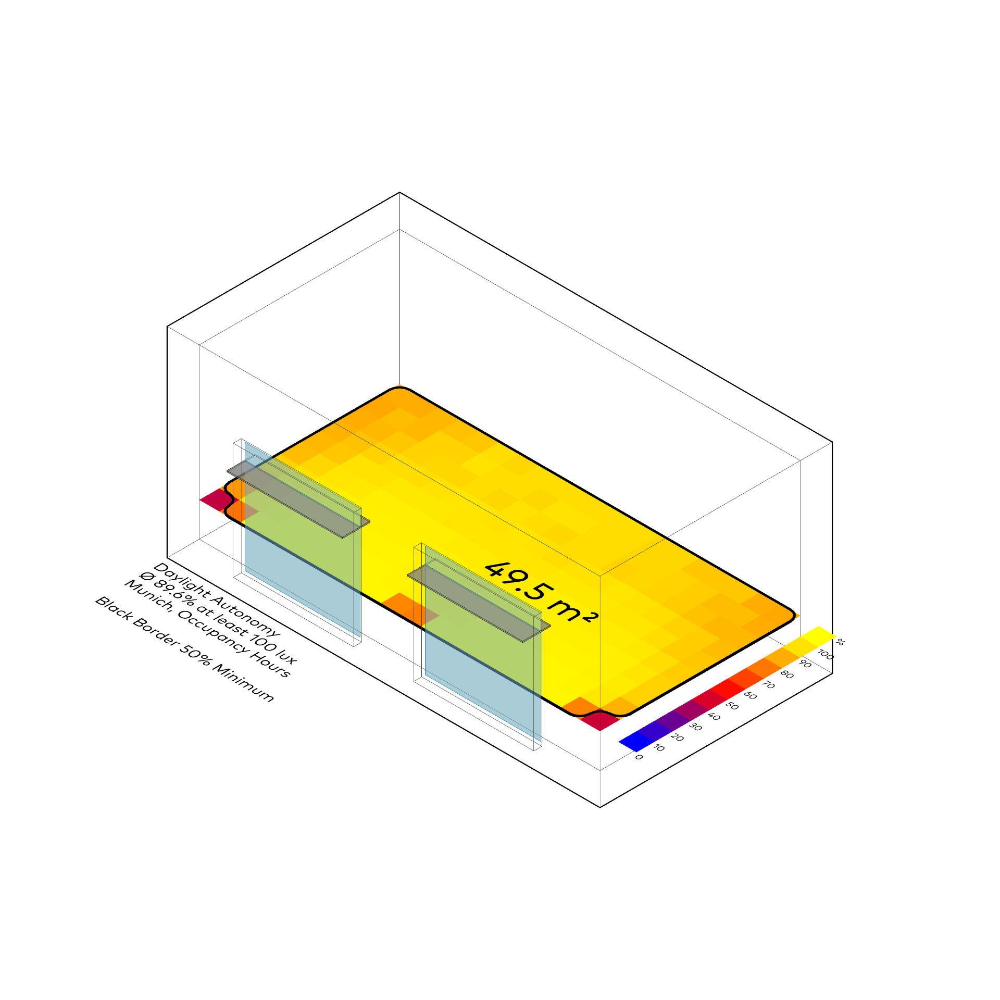
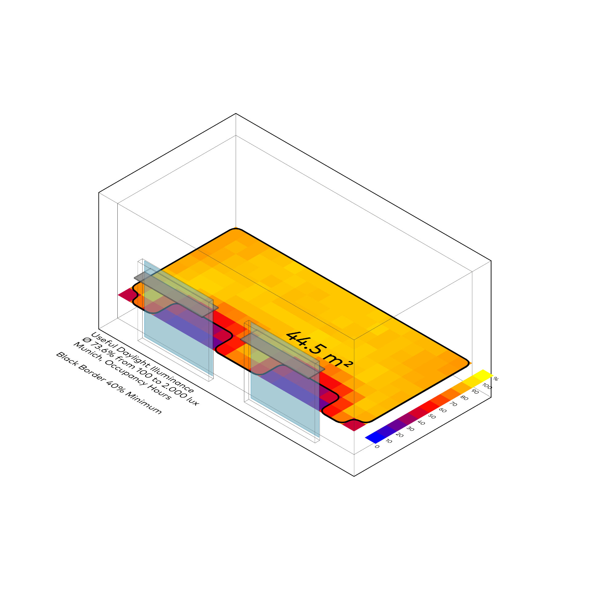

Jährliches Tageslicht
Honeybee
⬤ Honeybee berechnet Tageslichtmetriken (DA, cDA, UDI, sDA, ASE) stündlich – basierend auf Klimadaten und Betriebsstunden. Bewertet Eigenversorgung, visuelle Behaglichkeit, Überbelichtung. Erfüllt LEED/EN 17037-Standards. Optimiert Raumqualität durch smarte Fenstergestaltung und Verschattung – nachhaltiges Lichtdesign.
⬤ Honeybee calculates daylight metrics (DA, cDA, UDI, sDA, ASE) hourly – based on climate data and operating hours. Evaluates self-sufficiency, visual comfort, overexposure. Meets LEED/EN 17037 standards. Optimizes room quality through smart window design and shading – sustainable lighting design.